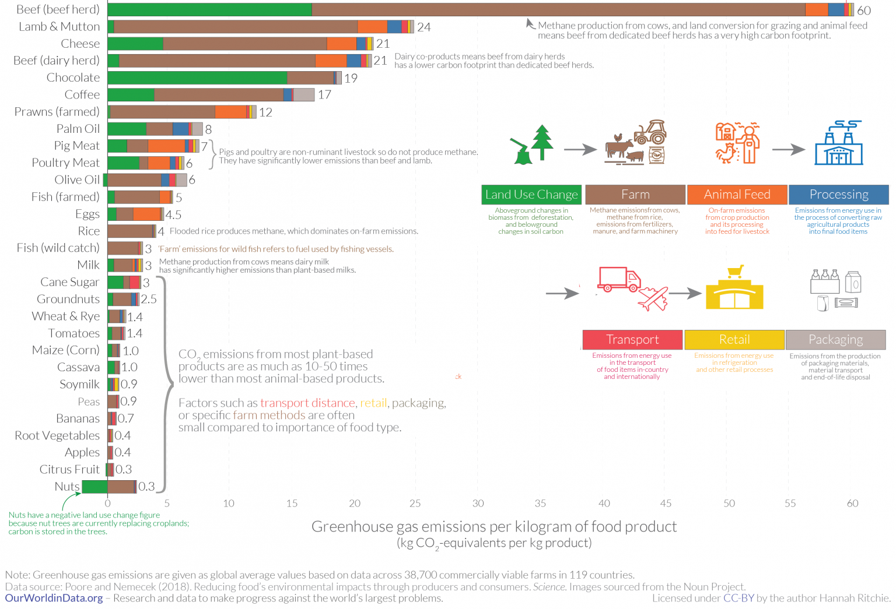

The Details of the Situation
When it comes to carbon impact, food systems are an incrediably important avenue of intervention. Globally, food accounts for over 25% of greenhouse gas (GHG) emissions. And among food production, meat takes up the lion share of emissions. Emissions from animal-based foods are twice that of plant-based foods. This means that animal-based foods (of which beef and other meats contribute hugely to) are responsible for almost 15% of global GHG emissions!
How it plays out at the Media Lab
In summer 2020, in collaboration with HBS environmental metrics startup Metric, we conducted a sustainability analysis of the Media Lab. We found that the Lab’s Scope 1 and Scope 2 emissions (ie all the emissions related to heating, cooling and powering the Lab’s operations) were ~2800 Metric tons of carbon dioxide equivalent (MTCO2e) for 2019.
To calculate emissions related to food purchasing, we looked at the Lab’s overall food expenditures, estimated the tons of food represented by that number based on local food prices, and calculated the emissions represented by those tons of food based on average meat consumption. Through this process, we estimated that the food purchased by the Media Lab was responsible for ~6500 MTCO2e: more than double the emissions coming from our electricity and HVAC systems.
This suggests that meat is among the largest contributors to the Media Lab's greenhouse emissions. And we can do something about it. By priorizing plant-based foods for Media Lab expenditures, we put our climate forward community's money where our mouth is. Why not give it a shot?
Rolling out such a proposal in practice requires a lot of hurdles. Learn more about some of the frequently asked questions, and how we plan to tackle this.